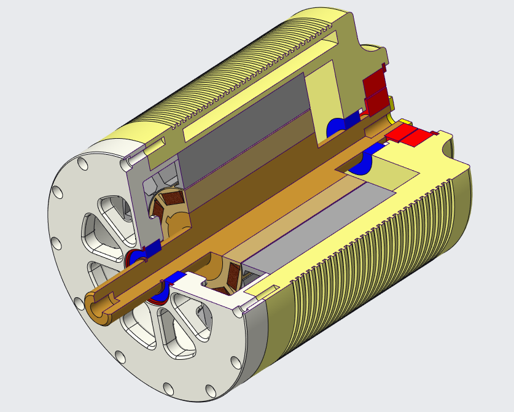

01 / Electric machines · 2026
Formula Student traction motor
Detailed mechanical integration in Creo of an inherited IPMSM concept, with nonlinear electromagnetic modelling and offline harmonic iterative learning control.
95.7%
Modelled torque-ripple RMS reduction across 9,605 calibration nodes